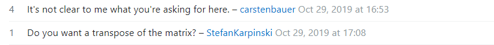

How to Not Be Left On Read - Coders Edition
06 Sep 2023
The Power of Questions
In my very first computer science class, I remember my professor saying that there was no such thing as a “dumb” question. He consistently encouraged our class to ask any questions, no matter how seemingly simple, not only because someone else might have been wondering the same thing but also because it’s more beneficial than pretending to know the answer. However, it’s very unlikely that we will encounter such a patient professor once we step outside the classroom. So, how exactly do we navigate through our challenges? In scenarios like this, mastering the art of asking smart questions, whether online or in person, becomes crucial as it helps us to identify and resolve problems more effectively.
“Smart” Questions
So what makes questions “smart”? They are characterized by several key attributes, but the most important ones are that they are clear, concise, and specific. A good example of this is a question on Stack Overflow whose subject header is “How to read AppSettings values from a .json file in ASP.NET Core”. The questioner starts off by showing how they set up their AppSettings data in a specific file.
I have set up my AppSettings data in file appsettings/Config .json like this:
{
"AppSettings": {
"token": "1234"
}
}
They then mention how they searched the question online and could not find anything useful while also showing a snippet of what they tried to solve the problem:
var configuration = new Configuration();
var appSettings = configuration.Get("AppSettings"); // null
var token = configuration.Get("token"); // null
They conclude by asking how to specifically read their data from a .json file in ASP.NET Core:
I know with ASP.NET 4.0 you can do this:
System.Configuration.ConfigurationManager.AppSettings["token"];
But how do I do this in ASP.NET Core?
This question is considered ‘smart’ because it exhibits key attributes: clarity, conciseness, specificity, and a demonstration of prior research. The asker’s effort to understand the topic and seek advanced information is evident. As a result, several people gave answers that either provided a solution or explained the process of getting it.
“Not So Smart” Questions
Now that we’ve looked at what a “smart” question could look like, let’s see an example of the opposite of one. A user on Stack Overflow asks this:
How to change values in lower triangular of matrix in julia and transform to upper triangular? I need help with homework
There are no other details, examples or snippets of code included. The questioner clearly did not bother researching beforehand or trying their own code before getting an error, leaving the commenters confused.

Source: “How to change values in lower triangular of matrix in julia and transform to upper triangular?”
Furthermore, considering the question was posted four years ago with only one person “attempting” to answer it, it’s evident that it’s a less-than-ideal example of a smart question. Questions like these deter people from interacting with the post because of how much time it would take for them to understand it.
Conclusion
To summarize, while there is no such thing as a dumb question, there are indeed questions that can be considered a waste of time and effort. Part of a software engineer’s job is to properly communicate their thoughts and ideas, and this includes asking well-thought-out questions too. Learning how to ask questions skillfully demonstrates your ability to communicate and also serves as a time-saving tool, where someone will actually answer you on time instead of leaving you on read.